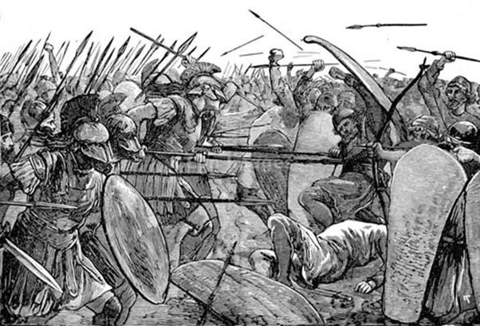

Theo quyết định của Số mệnh và thần thánh, quân Hy Lạp phải chiến đấu mười năm mới hạ được thành Troie. Những người Hy Lạp biết rõ điều đó. Nhưng họ không vì thế mà nản lòng, không vì thế mà ngồi chờ cho đến năm thứ mười mới tung quân vào đánh những trận quyết liệt. Ngược lại, ngay từ đầu họ đã lao vào những trận đánh lớn dường như chẳng quan tâm gì đến lời phán truyền của Số mệnh và thần thánh. Dường như họ muốn và có hy vọng có thể kết thúc cuộc tiến công của họ trước, sớm hơn điều tiền định của thần thánh.
Đoàn thuyền Hy Lạp cập bờ biển Troie, dàn hàng ngang và chuẩn bị đổ bộ, nhưng họ đã thấy trên bờ biển, quân Troie đông nghịt cũng đã dàn ra không rõ từ bao giờ, sẵn sàng nghênh chiến. Cầm đầu đạo quân Troie đông đảo là dũng tướng Hector luyện thuần chiến mã, con của vua Priam giàu có. Quân Hy Lạp do dự hồi lâu rồi sau mới quyết định tiến công. Mặc dù có một lời phán truyền của Số mệnh rằng người Hy Lạp nào đặt chân đầu tiên lên đất Troie sẽ bị chết, nhưng các dũng tướng Hy Lạp không vì thế mà chùn bước. Ulysse vứt tấm khiên của mình lên bờ và chàng thoắt một cái nhảy vọt lên, chân đặt lên tấm khiên rồi sau đó mới bước xuống đất để lao vào cuộc giao tranh. Làm như thế chàng sẽ chẳng phải là người hy sinh đầu tiên mà vẫn là vị tướng dũng cảm xông lên hàng đầu để lôi kéo binh sĩ. Cùng lúc với Ulysse nhảy lên bờ là tướng Protésilas. Chàng cầm đầu một vương quốc ở xứ Thessalie, đưa đạo quân đông đảo thiện chiến của mình cùng với bốn mươi chiến thuyền tham dự cuộc viễn chinh. Nhìn thấy Ulysse vứt tấm khiên lên bờ, Protésilas bèn chờ Ulysse nhảy là mình nhảy tiếp theo, như vậy mình chẳng phải là người đầu tiên đặt chân lên mảnh đất Troie. Song Protésilas hiểu sao được đầu óc tinh khôn của người anh hùng này, và tuy nhảy sau Ulysse nhưng chàng vẫn là người đầu tiên đặt chân lăn đất Troie. Chàng vung gươm giương khiên lao vào giao đấu với Hector. Người anh hùng con của vua Priam giàu có, bình tĩnh nhằm chàng dũng sĩ đang chạy tới trước mặt mình, phóng đi một ngọn lao ác hiểm. Mũi lao bay đi xuyên qua tấm khiên dày chắn trước ngực, cắm sâu vào trái tim người anh hùng Hy Lạp. Thế là linh hồn Protésilas vĩnh viễn ra đi. Cuộc hỗn chiến bạo tàn mở đầu bằng cái chết của Protésilas bắt đầu. Sau một ngày giao tranh đẫm máu, quân hai bên xác chết đầy đồng. Chiều đến quân Troie lui về cố thủ sau những bức tường kiên cố. Sáng hôm sau hai bên thỏa thuận ngừng chiến để thu nhặt các tử sĩ và làm lễ an táng. Những ngày tiếp sau, quân Troie vẫn cố thủ trong thành, còn quân Hy Lạp thì bắt đầu công việc xây dựng chiến lũy. Họ kéo tất cả những chiến thuyền lên bờ để tập trung lại thành một dãy dài rồi đắp một bức tường cao che chắn lại. Trước bức tường là một con hào sâu và rộng. Doanh trại của quân Hy Lạp đóng dài từ đầu đến cuối bức tường. Lều của chủ tướng Agamemnon nằm ở quãng giữa. Khi xây dựng thành lũy và sắp đặt việc canh gác, phòng thủ đã xong, quân Hy Lạp bèn cử một phái đoàn do tướng Ménélas và Ulysse vào thành Troie thương thuyết. Lão tướng Anténor, anh rể của vua Priam tiếp đãi đoàn sứ giả Hy Lạp rất trọng thể. Ông là người có thiện chí và rất mong muốn giải quyết cuộc xung đột bằng thương lượng. Vua Priam được tin có đoàn sứ giả Hy Lạp đến liền cho lệnh triệu tập ngay Đại hội Nhân dân để cho mọi người được công khai biết rõ mọi sự việc và bày tỏ thái độ. Những người Troie mời Ménélas và Ulysse tới dự và trình bày chủ kiến. Ménélas lên tiếng trước. Chàng nói ngắn gọn, bày tỏ ý muốn người Troie giao trả lại cho mình nàng Hélène cùng với những của cải mà họ đã cướp đi. Tiếp đến là Ulysse, với tài nói hùng hồn, uyển chuyển, hấp dẫn, chàng thuyết phục người Troie nên giải quyết thỏa đáng những nguyện vọng của Ménélas, như vậy tránh cho con dân hai bên khỏi đổ máu mà lại mở ra mối bang giao hòa hiếu sau này. Những người Troie nghe Ulysse nói như uống từng lời. Người ta bảo, không phải Ulysse nói mà là chàng đang rót mật ong vàng pha với rượu vang mời mọi người cùng thưởng thức. Lão tướng Anténor cũng đứng lên thuyết phục nhân dân nên chấp nhận những đòi hỏi khiêm tốn của quân Hy Lạp. Nhưng ngược lại, những người con trai của vua Priam không muốn thế. Người chống lại quyết liệt nhất là Paris. Chàng coi Hélène là báu vật mà nữ thần Tình yêu và Sắc đẹp-Aphrodite ban cho mình. Chẳng nhẽ chàng lại bị cướp không tặng vật thiêng liêng mà chàng đã được trả công xứng đáng trong cuộc phân xử vụ tranh chấp quả táo vàng “tặng người đẹp nhất”? Paris lôi kéo được một số anh em tán thưởng với mình, thậm chí Antimaque, một người em của Paris, lại đưa ra những đòi hỏi quá khích. Y kêu gào mọi người phải bắt ngay Ménélas và Ulysse đưa ra xử tội trước Đại hội Nhân dân nhưng vua Priam và dũng tướng Hector đứng lên phản đối. Một hành động quá khích như vậy là vi phạm vào những đạo luật thiêng liêng che chở cho những sứ giả, đạo luật do thần Zeus ban bố. Hội nghị Nhân dân nghe rất nhiều ý kiến trái ngược nhau nên chưa thể quyết định theo một ý kiến nào. Đang lúc nhân dân còn chưa định liệu được thái độ của mình thì Hélénos, em của Paris, đứng lên hô hào những người Troie hãy tiếp tục cuộc chiến tranh. Hélénos cất tiếng dõng dạc, bừng bừng nhiệt tình nói những lời lẽ như sau:
- Hỡi những người Troie luyện thuần chiến mã! Nếu chúng ta chấp nhận những kiến nghị của người Hy Lạp đưa ra thì có nghĩa là chúng ta đã vứt bỏ danh dự của những người anh hùng con dòng cháu giống của Dardanos tổ phụ. Paris không cướp nàng Hélène của Ménélas. Nữ thần Aphrodite đã ban người đàn bà xinh đẹp tuyệt vời ấy cho chàng. Lẽ nào chàng trai đẹp nhất ở châu Á phân xử rất sáng suốt vụ tranh chấp rất quyết liệt về cái đẹp, quyết định xem vị nữ thần nào là đẹp nhất lại không xứng đáng được nhận một phần thưởng về cái đẹp, một người đàn bà đẹp nhất châu Âu hay sao? Những người Hy Lạp và người anh hùng Ménélas hãy tìm đến nữ thần Aphrodite mà đòi mà hỏi. Còn chúng ta, chúng ta chỉ biết tuân theo những lời phán bảo của thần linh. Những người Hy Lạp đã xâm phạm vào đất đai thiêng liêng của chúng ta. Chúng đánh chúng ta rồi chúng lại cử người đến đưa ra những lời nghị hòa. Sao chúng không đưa ra những lời nghị hòa trước khi đổ quân lên đồng bằng Troade này? Chúng đòi chúng ta hòa giải, chúng đòi chúng ta nhân nhượng. Không thể được! Hỡi những người Troie luyện thuần chiến mã, con dòng cháu giống của tổ phụ Dardanos phóng lao điêu luyện! Hãy xông lên chiến đấu để bảo vệ đô thành thiêng lêng của chúng ta! Thần Zeus và các vị thần Olympe sẽ giúp chúng ta giành được thắng lợi! Nếu chúng ta nhân nhượng chúng thì liệu chúng có xuống thuyền về nước hay không? Hay là sau khi đòi được nàng Hélène chúng lại cứ tiếp tục vây đánh chúng ta? Không, nhất quyết không, không thể nào tin vào lời chúng được!
Rõ ràng một bầu không khí như vậy không thể tạo điều kiện thuận lợi cho những cuộc thương thuyết. Đại hội Nhân dân xem ra không thể quyết định được giữa tiếp tục chiến tranh với thương lượng, và như vậy có nghĩa là tiếp tục chiến tranh. Đoàn sứ giả Hy Lạp đành phải ra về.
Cuộc chiến tranh diễn ra ngày càng quyết liệt. Quân Hy Lạp bao vây thành Troie. Quân Troie cố thủ trong thành và không tham chiến. Đã nhiều lần quân Hy Lạp mưu đột phá vào trong thành, chọn những chỗ xung yếu cho quân mang thang để trèo tường, vượt tường nhưng đều bị thất bại. Họ bèn đổi cách đánh, không tập trung lực lượng đánh thành nữa mà đem quân đi đánh các lực lượng xung quanh vùng đồng bằng Troade vốn là bạn đồng minh của quân Troie. Vả lại tình thế cũng buộc họ phải đánh theo cách ấy. Nếu không họ chẳng có nguồn lương thực nào để tiếp tục tiến hành chiến tranh. Nhiều hòn đảo bị quân Hy Lạp đổ bộ lăn cướp phá. Nhiều đô thành bị quân Hy Lạp vây đánh triệt hạ. Biết bao tướng sĩ Hy Lạp đã lập được những chiến công to lớn. Tuy nhiên nếu bình công thì chàng Achille con của nữ thần Biển-Thétis phải là vị anh hùng có công lớn nhất. Chàng đã triệt hạ mười hai thành bằng đường thủy và mười một thành bằng đường bộ. Trong số những đô thành bị Achille triệt hạ có thành Thèbes cổng cao ở đất Tiểu Á do vua Éétion bố vợ của dũng tướng Hector trị vì. Chính tay Achille đã giết chết lão vương song không giữ thi hài cụ lại để hành hạ, bêu riếu nhằm đòi của chuộc. Achille đã hỏa táng cho cụ. Bảy người con của cụ cũng bị bàn tay Achille giết chết trong cùng một ngày.

Quân Hy Lạp và quân Troie giao chiến
Thật ra suốt chín năm ròng chiến tranh có biết bao nhiêu chuyện. Quân hai bên đều tổn thất và phải trải qua những lúc gian nguy, thiếu thốn, khó khăn. Làm sao có thể kể hết được. Nhưng có một chuyện mà các nghệ nhân xưa không thể bỏ qua. Đó là chuyện Ulysse lập mưu trả thù Palamède.
Như trên đã kể, người anh hùng Palamède bằng đầu óc thông minh, tinh khôn của mình đã khám phá ra được cái bệnh vờ điên, giả điên - cái vở “Ulysse giả dại” - của chính Ulysse, người anh hùng lắm mưu nhiều kế. Trong những năm chiến đấu dưới quyền thống lĩnh và chỉ huy của vị thủ lĩnh tối cao Agamemnon, Palamède đã có nhiều cống hiến khá lớn lao. Uy tín của chàng trong Hội đồng Tướng lĩnh cũng như trong binh sĩ rất lớn. Chàng biết nhiều phương thuốc đã chữa lành các vết thương. Chàng làm ra ngọn hải đăng để soi đường cho những chiến thuyền. Chàng góp nhiều ý kiến sáng suốt, những ý kiến có tầm nhìn xa trông rộng để cho những người Hy Lạp tổ chức các trận giao tranh, tiến công cũng như phòng ngự. Tài năng và hoạt động của Palamède như một ngôi sao tỏa sáng ngời ngợi vô hình trung làm mờ nhạt đi cái ánh sáng của ngọn đuốc Ulysse. Một nỗi ghen tức ấm ức, kèn cựa nhỏ nhen nung nấu âm ỉ trong trái tim của Ulysse. Nhớ lại chuyện cũ xưa kia thì chính Palamède là người đã phát hiện ra, đã moi ra cái vụ Ulysse vờ điên, giả dại để trốn nghĩa vụ tham dự vào cuộc viễn chinh sang thành Troie, Ulysse càng căm thù Palamède. Chỉ vì Palamède mà Ulysse phải ra đi, phải chịu tiếng xấu trước toàn quân. Còn bây giờ chỉ vì Palamède mà Ulysse không được danh tiếng lẫy lừng, không được suy tôn trọng vọng như thánh như thần, và khi con người ta đã suy nghĩ như thế, người anh hùng Ulysse đã suy nghĩ như thế, thì tính người cũng mất mà phẩm chất anh hùng cũng không còn. Từ đây bắt đầu một âm mưu trả thù hèn hạ.
Lợi dụng chuyện có lần Palamède đã khuyên anh em binh sĩ Hy Lạp nên kết thúc cuộc chiến tranh để trở về với gia đình, quê hương vì cuộc chiến tranh đã quá dài, sự hy sinh, tổn thất cũng như những nỗi đau thương và nhọc nhằn gian khổ mà toàn dân Hy Lạp phải chịu đựng là rất lớn, Ulysse nghĩ ra một kế rất là thâm độc: vu cho Palamède tư thông với quân Troie. Vào một đêm tối trời, Ulysse đem giấu một túi vàng vào lều của Palamède, và tiếp sau đó Ulysse tung ra một nhận xét hiểm độc: sở dĩ Palamède đưa ra lời khuyên như thế là vì đã bị Priam, vua của thành Troie mua chuộc; thế là trong toàn quân Hy Lạp lưu truyền cái dư luận ấy. Khá nhiều binh sĩ thậm chí cả đến tướng lĩnh không rõ thực hư đã tin ngay vào cái dư luận ấy. Những người này cho rằng nếu nghe theo lời Palamède thì họ đã hoài công lăn lội sang đây để rồi trở về tay không, không một chút vinh quang, không một thuyền chiến lợi phẩm nào theo họ về nước, và chỉ có một kẻ phản bội mới khuyên nhủ con người ta hành động như thế. Khi dư luận lan truyền khá rộng trong binh sĩ, Ulysse bèn gặp chủ tướng Agamemnon dựng lên một chuyện ám muội: chính Palamède đã liên lạc với vua Priam ở thành Troie qua một tên tù binh, tên này sau khi nhận tin tức của Palamède mưu vượt trạm giam để về Troie nhưng không thành. Quân canh dưới quyền chỉ huy của Ulysse đã bắt được và giết chết tên tù binh đó. Chưa hết, với sự bỉ ổi và hèn hạ vốn không có giới hạn, nhất là trong trường hợp kẻ tạo dựng nên và thực thi sự bỉ ổi và hèn hạ đó lại là một vị tướng có nhiều quyền thế như Ulysse, Ulysse viết một bức thư giả mạo là của Priam gửi cho Palamède. Nội dung bức thư cho biết, Priam thưởng Palamède túi vàng vì đã có công kêu gọi, khuyên nhủ quân Hy Lạp bãi binh, hồi hương. Bức thư giả mạo này được trao cho một tên tù binh người Troie để đem về cho vua Priam. Tên tù binh cầm bức thư và nhận lệnh sung sướng đến nỗi tưởng như mình đang sống trong mơ, hắn cứ lắp bắp không sao nói được lên lời cảm ơn vị tướng đã sinh phúc tha tội cho mình. Như vậy là hắn được phóng thích để trở về với quê hương gia đình. Nhưng hỡi ôi! Hắn chỉ là vật hy sinh cho âm mưu nham hiểm và đê tiện của Ulysse. Vừa ra khỏi doanh trại đi chưa được bao lâu thì hắn bị một người linh Hy Lạp bất thần, nấp ở đâu đó, xông ra đâm cho một giáo chết tươi. Thế là bức thư trong người tên lính Troie được lấy ra đem trình lên chủ tướng Agamemnon. Lập tức Agamemnon cho triệu tập cuộc họp Hội đồng Tướng lĩnh, đồng thời cho mời Palamède đến dự. Trước Hội Đồng, Agamemnon kết tội Palamède phản bội. Palamède vô cùng sửng sốt trước sự kiện mà chàng không thể nào hiểu nổi. Agamemnon đưa ra bức thư, Palamède thanh minh và phản bác lại rằng đó chỉ là một âm mưu vu khống hèn hạ của một kẻ xấu xa nào đó. Đúng lúc ấy, Ulysse đứng ra tỏ vẻ vô tư và sáng suốt, Ulysse đề nghị chủ tướng Agamemnon và Hội đồng Tướng lĩnh cho khám lều của Palamède. Nếu không thấy túi vàng trong lều thì Palamède là người vô tội. Ngây thơ, Palamède tán thưởng ngay. Hơn nữa, chàng còn thầm cảm ơn Ulysse đã mở ra một con đường thoát cho cái chuyện rắc rối này. Kết quả như thế nào hẳn không cần phải kể chúng ta ai cũng rõ. Agamemnon như vậy là có đủ bằng chứng để kết tội Palamède là một tên phản bội, và đối với những kẻ phản bội trong quân ngũ, tư thông với quân địch, ăn ở hai lòng thì chỉ có một hình phạt: xử tử. Quân lính áp giải Palamède lên một ngọn núi cao, xiềng chàng lại, và đứng trên ngọn núi này chàng phải chịu hình phạt ném đá cho tới chết. Palamède không có cách gì để thanh minh nổi, và dẫu chàng có nói thì cũng chẳng một ai để ý lắng nghe. Tội đã rõ. Bằng chứng hiển nhiên, án đã quyết, chàng cắn răng chịu cái chết oan uổng.
- Ôi, Chân lý! Ngươi lại chết sớm hơn cả ta, thật xót xa và cay đắng. - Đó là câu nói cuối cùng của Palamède trước khi nhận những trận mưa đá tới tấp từ các phía ném vào người.
Thế là quân đội Hy Lạp mất đi một người anh hùng thông minh nhất và cao thượng nhất. Công lao to lớn của chàng đối với quân Hy Lạp bị xóa sạch vì đó là công lao của một tên phản bội, và câu nói cuối cùng của chàng cũng chẳng làm ai phải bình tâm lại mà suy nghĩ. Vì đó là lời nói của một tên phản bội.
Palamède chết nhưng đối với Agamemnon hình phạt đó cũng chưa xứng đáng với tội phản bội tày đình của chàng. Vị Tổng Chỉ huy ra lệnh trừng phạt tiếp: cấm không cho ai được chôn cốt thi hài Palamède. Có như vậy mới đày đọa linh hồn hắn được, để cho linh hồn hắn phải lang thang phiêu bạt vĩnh viễn chẳng được yên nghỉ thư thái. Nhưng tướng Ajax Lớn, con của Télamon, phản kháng lại lệnh đó. Chàng đích thân đứng ra lo việc an táng cho Palamède theo đúng nghi lễ long trọng của người Hy Lạp. Riêng về Ajax đối với Palamède, về lý chàng không có bằng chứng gì để bênh vực, gỡ tội cho Palamède nhưng về tình, về sự hiểu biết của chàng đối với con người Palamède, chàng không hề tin rằng Palamède là người phản bội.
Ôi, Chân lý! Ngươi lại chết sớm hơn cả ta, thật xót xa và cay đắng! Câu nói đó của Palamède được Ajax ghi nhận như một bằng chứng về cái chết oan ức của Palamède. Nó cứ giày vò trái tim người anh hùng con của Télamon, chàng Ajax Lớn tính nóng như lửa, trong nhiều năm.
Lại nói về cái chết của Protésilas, vị dũng tướng Hy Lạp đầu tiên ngã xuống trên mảnh đất Troie. Tin dữ bay về đến Thessalie. Người vợ trẻ đẹp của Protésilas mà chàng mới cưới trước khi lên đường viễn chinh chưa được bao lâu là nàng Laodamie khóc than, đau đớn, vật vã không biết mấy ngày đêm. Nàng cầu xin với các vị thần, từ thần Zeus cai quản bầu trời và mặt đất đến thần Hadès cai quản chốn âm phủ tối tăm hãy rủ lòng thương nàng, gia ân cho chồng nàng được trở lại dương gian gặp nàng một thời hạn, một thời hạn ngắn thôi đủ để hai vợ chồng nhìn nhau từ biệt, nói được đôi ba lời cho khỏi ân hận trong lòng. Các vị thần chuẩn y lời cầu xin. Thật quý hóa và nhân đức. Protésilas từ vương quốc tối tăm của thần Hadès trở về với thế giới loài người tươi sáng, nhởn nhơ. Hai vợ chồng gặp nhau. Mừng mừng tủi tủi. Miệng mỉm cười mà nước mắt lã chã tuôn rơi. Nhưng thời gian vốn lạnh lùng và dửng dưng trước tình người. Đã đến hạn kỳ Protésilas phải trở về lòng đất tối đen. Chàng gỡ vòng tay của vợ đang xiết chặt lấy chàng. Còn vợ chàng, nàng Laodamie trước cảnh biệt ly vĩnh viễn ấy đã không chịu đựng nổi. Nàng rút gươm đâm vào ngực tự sát để được sống vĩnh viễn với người chồng.
Như trên đã kể, trong trận quân Hy Lạp tấn công triệt hạ thành Troie cổng cao ở xứ Mysie, đất Tiểu Á, Achille đã lập được những chiến công to lớn. Quân Hy Lạp thu được nhiều chiến lợi phẩm, bắt được nhiều tù binh. Hội đồng Tướng lĩnh và Đại hội Binh sĩ bình công, khen thưởng đã trao cho thủ lĩnh tối cao Agamemnon một thiếu nữ xinh đẹp tên là nàng Chryséis. Còn Achille cũng được tặng thưởng một thiếu nữ xinh đẹp là nàng Briséis. Biết tin con gái mình bị bắt, lão ông Chrysès vốn là người trông coi việc thờ cúng thần Apollon, một viên tư tế sùng ái của thần, đem nhiều của cải đến tận lều của chủ tướng Agamemnon xin chuộc lại con gái. Nhưng chủ tướng Agamemnon không nhận của chuộc, chủ tướng không muốn trả lại con gái cho cụ già. Chẳng những thế, Agamemnon còn lăng nhục cụ già, đe dọa sẽ trừng trị ông cụ nếu cứ còn khẩn khoản vật nài xin chuộc lại đứa con. Lão ông Chrysès buồn rầu và tức giận, ra về. Do chuyện này mà đến năm thứ mười của cuộc chiến tranh, quân Hy Lạp phải chịu một tai họa trừng phạt.